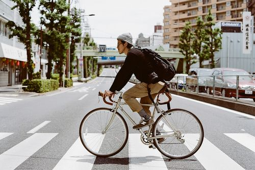

Green Transport
The way we travel affects the air we breathe and the climate we share. Even small changes to how you get around can help.

Greener ways to get around
Walk for short journeys
Walking makes no pollution and keeps you active.
Cycle
A bike is quiet, cheap and clean, and much quicker in busy towns.
Use public transport
One bus or train carries many people, so each traveller shares the impact.
Carpool
Sharing a car means fewer cars on the road for the same journey.
Combine errands
One planned trip instead of three separate ones saves fuel and time.
Reduce unnecessary trips
Ask: can this be done online, by phone or closer to home?
Comparing your choices
| Choice | Environmental impact | Best for | Things to consider |
|---|---|---|---|
| Walking | Lowest impact | Short journeys | Time and weather |
| Cycling | Very low impact | Short to medium journeys | Needs safe routes |
| Public transport | Low impact per person | Longer or regular journeys | Timetables and routes |
| Carpooling | Medium impact per person | Shared regular journeys | Needs coordination |
| Driving alone | Highest impact per person | When nothing else fits | Fuel, traffic and pollution |
| A general guide, not exact figures. Impact depends on the vehicle and how full it is. | |||
Why alternatives to driving alone matter
Cars burn fuel, which releases greenhouse gases and air pollutants. When many people travel alone in separate cars, roads get crowded and emissions rise.
Walking, cycling, public transport and carpooling spread the impact across more people, or remove it. They can also reduce traffic, noise and the cost of travel. You do not have to give up your car: swapping a few journeys makes a difference.